Overview
CRYENGINE's Animation System supports an animation driven IK which can re-target limbs on-the-fly, controlled by the animation. The Blend-Weight of the IK can be controlled and animated in the 3D package.
What the system is for
This system uses extra bones inside the character's skeleton to define both an IKTarget and a blend weight. It can be used for example to make sure a limb reaches a specific destination regardless of animations in higher layers modifying the skeleton - for example a reload animation that always brings the hand to the pocket at the belt, regardless of upper body animations rotating the torso and arms. Or it can be used to "glue" the left hand to the gun inside an aimpose.
Aimposes can even be used for different guns, and all that needed to be change to make an aimpose fit for a different gun is to move the IK-Target to the correct spot at the new weapon, saving animation memory and time for asset creation.
The number of IK Setups is not limited to a single one. It is possible to blend from one IK Target to another using this system (for example blending the left hand from the weapon to the magazine and back).
How the IK is applied
Which IK solver is to be used is defined inside the file of the character. It connects one of the solvers (2-bone, 3-bone or CCD IK) with a chain of bones, the IK-Target bone and the IK-Blend-Weight Bone.
Both the blend-weight bone and the target-bone can be animated, if the blend-weight bone indicates that the IK should be blended in, the Animation system starts applying the IK Solver listed in the .chrparams File to the bone chain using the IK-Target-Bone.
The End-effector of the bone chain is aligned with the target bone, matching it's rotation - this way for example the hand orientation can be controlled as well.
The blend-weight is determined by the distance of the blend-bone to it's parent (in centimeters) in the x-axis. The value is capped to 0..100 to avoid problems from blending multiple animations affecting the same blend bones.
While the IK will move the end-effector to the target regardless, it doesn't aim at creating a very natural look. For best visual results, animate the character accordingly (to get the end-effector close already) and only use the IK to fix the deviation - instead of doing all the movement purely with the IK bones.
Creating the Bone Setup (in Max)
This section explains how to set up the IK Bones in Max, but the information is applicable to other DCC packages.
Adding extra bones to the skeleton
Each Animation-Controlled-IK Setup needs two extra bones in the character's skeleton - the target bone and the blend-weight bone.
Create two extra bones in Max using the bone tools, and give them appropriate names. For this example, the names will be Bip01 Chin_IKTarget and Bip01 Chin_IKBlend and they will be used to redirect the character's hand to his chin.
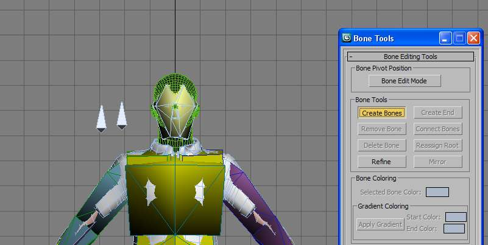
Both bones need to be children of the bone that is closest to the final IK Target. This is done so that the target automatically inherits all of the parent's transformations as the character is being animated, ending up in the right re-targeting location.
For re-targeting the left hand to the weapon for example, you might make the bones children of the right hand or right weapon_bone.
Since for this example the hand shall be lead to the chin, the two bones should be children of the head bone. Open the Schematic View and link the two new bones to the head bone.
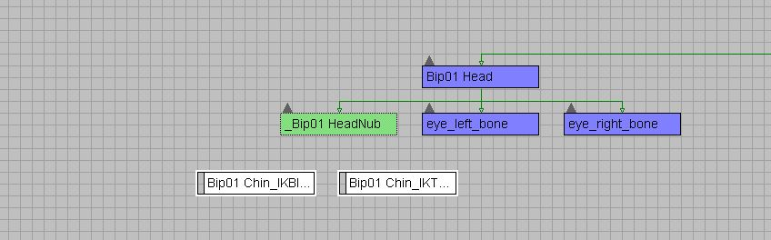
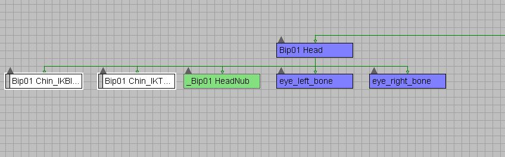
Positioning the bones
Since the blend-weight bone will be evaluated for its distance on the x-axis to it's parent, it needs to be aligned with the parent bone. Select the Bip01 Chin_IKBlend bone and select the Align tool. Pick the Bip01 Head as a target and align the position and all axes.
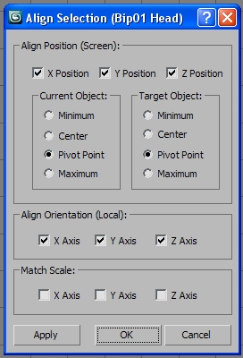
The IK-Target bone should be placed somewhere close to the chin - it will represent where the left hand is going to be later.
Note that the rotation of the bone will also be taken into account and applied to the hand bone - rotate the bone as well (you can use the align tool on the character's left hand to get a preview of what the hand orientation would look like).
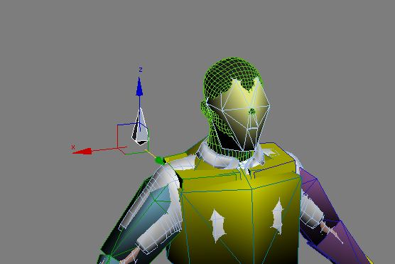 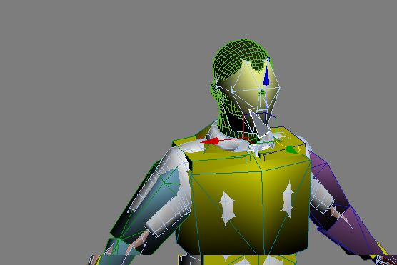
Set up the blend weight Slider
To be able to easily animate the blend weight for the IK, this section describes how to set up a slider for the blend-bone, so that it doesn't need to be moved manually. This is specific to 3DS Max, but should be possible in most 3d packages.
It is purely for convenience, and if your 3D software doesn't support this, you can of course animate the bone's position with regular manual keyframe animation as well.
Select the blend-weight one Bip01 Chin_IKBlend and switch to the Modifier Tab.
Add the Modifier "Attribute Holder" to the stack:
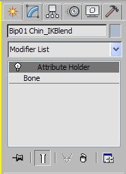
To add a slide to the modifier, select the menu "Animation" and choose "Parameter Editor".
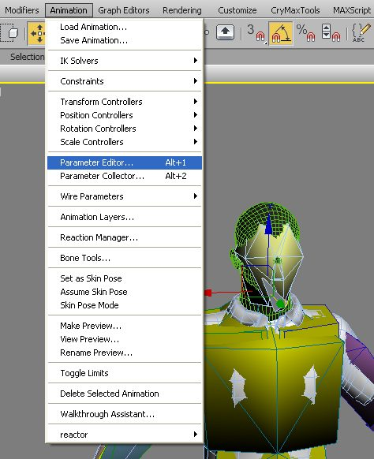
In the dialog that opens, choose Slider as the UI Type. Change the name to "IK Blend Weight".
In the bottom of the dialog you should see a preview of the slider. Once you are done, hit the Add button and the slider should appear in the modifier parameters.
Below is a picture of the Parameter Editor with all the values set up. Make sure the Range goes from 0 to 100.0 (as 100 cm is the maximum blend weight).
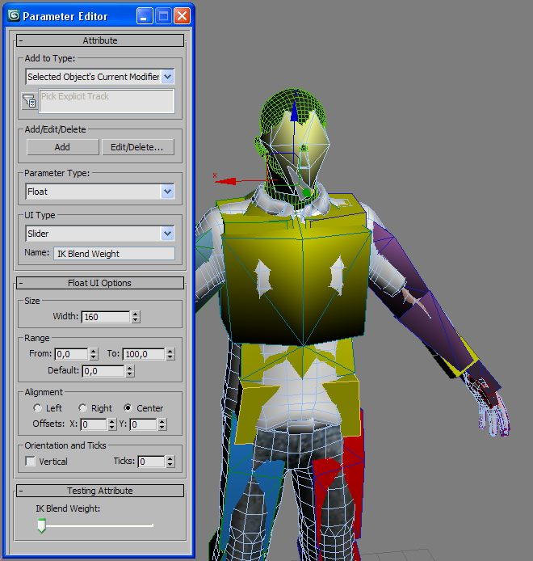
To link the slider to the x position of the IK-Blend-bone, go to the Animation menu again.
Choose Wire Parameters from the menu:
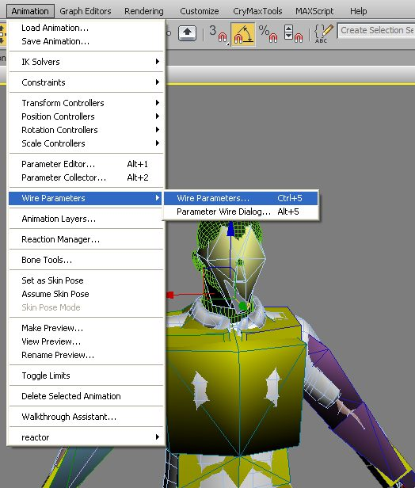
This will open a popup menu letting you choose the source of the parameter wiring.
Choose Modified Object -> Attribute Holder -> Custom Attributes -> IK Blend Weight. This will select the sliders value as the data source.
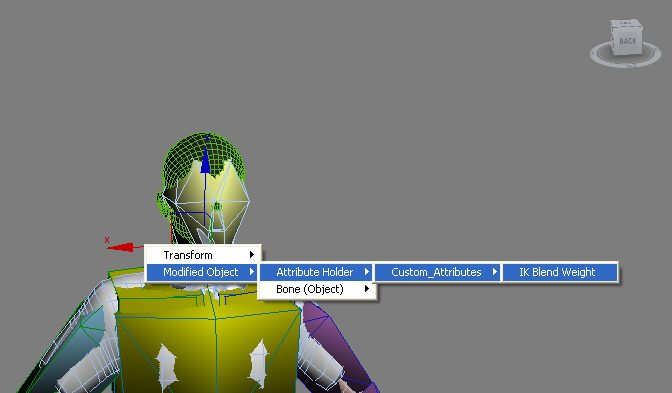
Press "H" to open the Selection dialog to choose a target for the Parameter Wiring.
Choose the Bip01 Chin_IKBlend bone and press Pick:
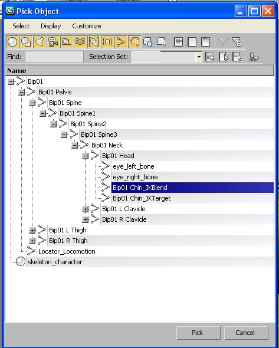
Another popup dialog will open, allowing to choose the target of the wiring.
Choose Transform -> Position -> X Position to link to the bone's x translation:
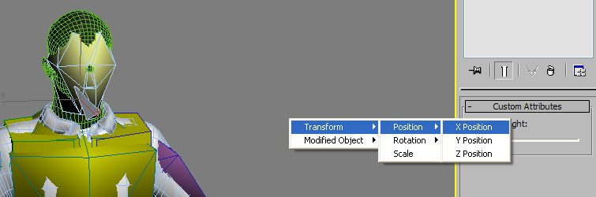
Finally the Parameter Wiring dialog will open and present the source and the target of the wiring.
To create the connection, choose the double sided control connection (top of the three buttons, with the double sided arrow).
Click Connect to make the final connection and close the Editor:
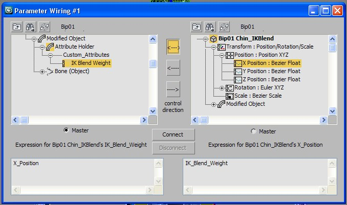
To test the setup, use the slider and move it.
You should see the blend bone coming out of the character's head along with the slider movement.
Note that in the picture the movement axis looks like it is set to the z-axis, but that is only because the transform gizmo's coordinate system is not set to local)
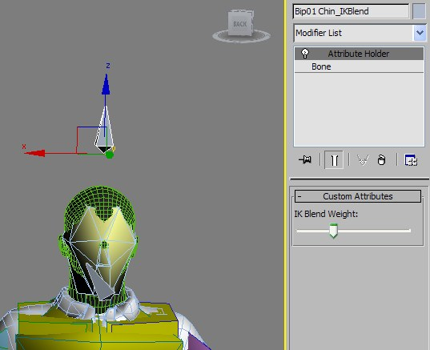
Export your character's skeleton again so it contains the new bones.
This must be done or the animations will not work. Only the skeleton needs re-exporting, since the new bones do not need to be included in any skinning.
Setup in the Character Parameters File
To make CRYENGINE aware of the IK Bones and link them to a Solver, open the character's File.
Add a new line to the Animation Driven IK Targets with the new bones just created:
<ADIKTarget Handle="LftArm01" Target="Bip01 Chin_IKTarget" Weight="Bip01 Chin_IKBlend"/>The section Animation_Driven_IK_Targets lists every bone-controlled IK Setup this character already has.
Each entry specifies which bones to use for the target and the blend weight - and a handle which points to an IK Solver Setup. These handles are listed in the LimbIK_Definition section just above, and it links a solver (which corresponds to code) and a bone chain.
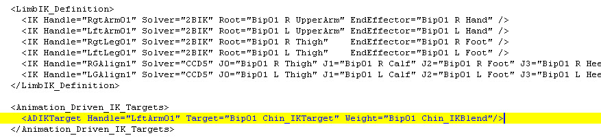
This is an excerpt of the SDK character's .chrparams File with the new bones already set up.
If you want to use this inside an Aim Pose to glue the front hand to the weapon for example (attach blend bone and target to the weapon bone) you need to make sure that both the blend bone AND the target bone have at least one rotation key set on them. The Aiming system disregards bones without rotation controllers as an optimization. The blend bones can be freely rotated anyway, since only the translation is relevant. If using this form of IK in any other animation, this restriction does not apply.
Creating a Sample IK Animation
This section will use the bone setup created in the previous section to create a small sample animation where the character will touch his chin. The hand will be retargeted so that it reaches the chin even if another upper-body animation is animating the head.
Creating the Asset
Create an animation in Max that brings the left hand up to the chin and back. For this example, the relaxed_idle was used as a base and the animation was done in a layer. Use the align tool to bring the hand of the character to exactly the IK bone's position and orientation.
If you do not like the result you can animate the IK Target bone. Another option would be to move the hand to where you want it to be and then align the IK Target Bone to the hand bone instead.
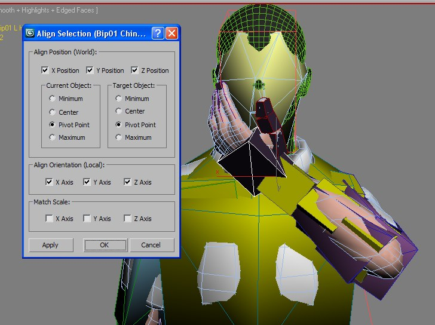
To activate the retargeting, select the blend bone Bip01 Chin_IKBlend and switch to the Modifier Tab (in Max).
Use the IK Blend Weight Slider to create Keyframes for the Bone with the Blend Weight faded out to 0 at the start and end of the animation and faded in 100% during the time where the hand is at the chin.
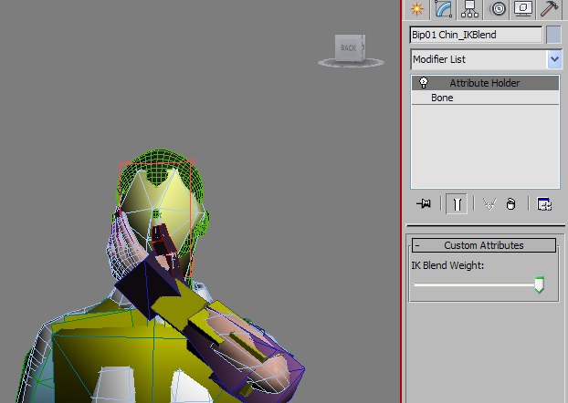
Export the animation and map it in the .chrparams file for your character.
This example motion is already included in the CRYENGINE 3 SDK 3.2.1 and up. It can be found in the source, the filenames are relaxed_idle_touchChin_IK_01.bip and .caf and the max files for the SDK character contain the extra bones. The Max file marked for_animation contains the slider setup created in the previous section. You can find the exported animation in the Character Editor under the name ik_demo_touch_chin.
Testing the Retarget in CRYENGINE
Test the bone setup
Start CRYENGINE, open the Character Editor, load your character and play the animation just exported. To check that the IK bones have been exported correctly, turn on to show the skeleton in the Debug Options.
The IK Blend Bone should rise above the head during the course of the animation and come back down at the start and end of it.
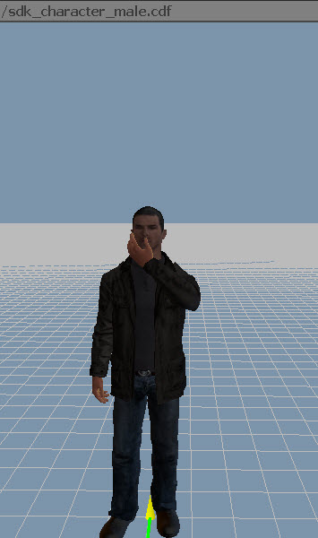 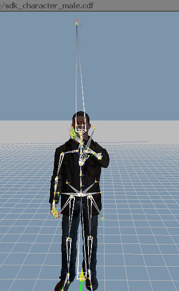
Test the retargeting
To test the retargeting, play the IK Animation in the base layer. The character will touch his chin exactly as authored since no other animation is playing on the skeleton at the same time.
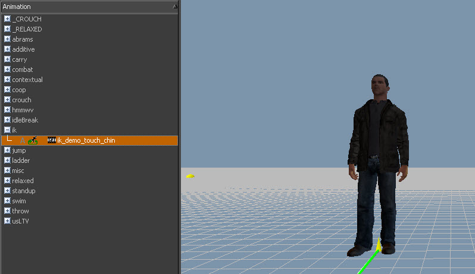
On the right side, in the "Advanced Animation Settings" choose a higher layer. This will cause all selected animations to be started in this layer instead.
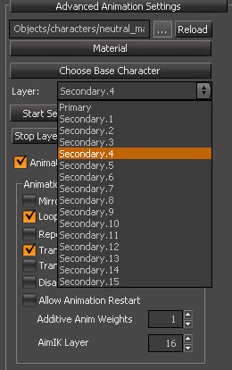
Select an upper-body animation that will move the head noticeably, for example an additive that makes the character look around.
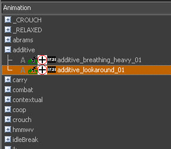
The character will continue to touch and release his chin, but follow the additive head motion. The hand will reach and stay at the chin regardless of the direction that the head is looking at.
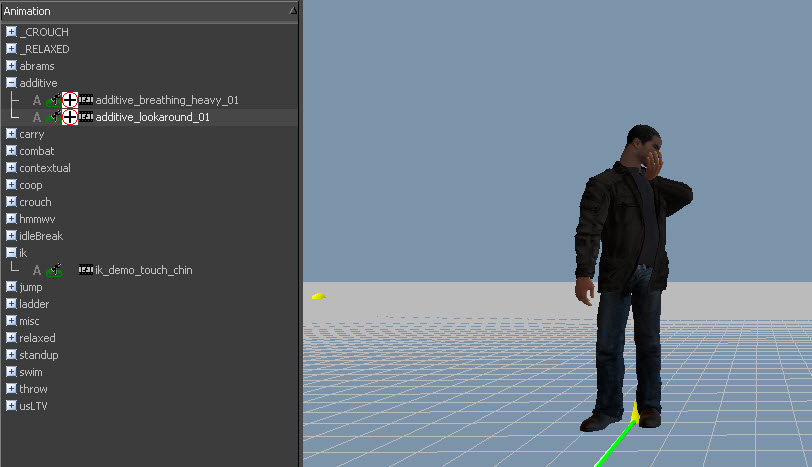